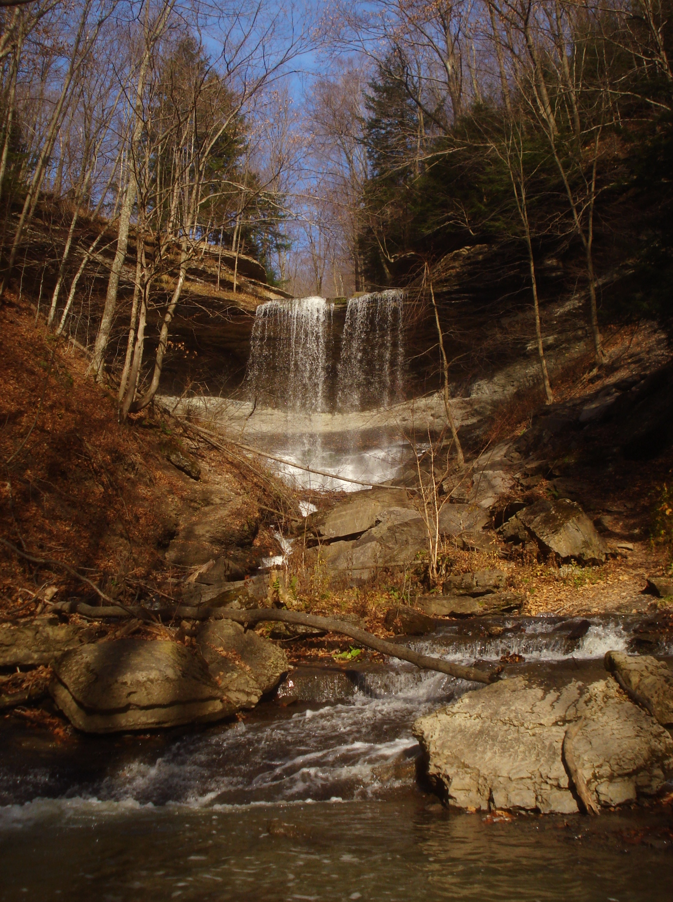
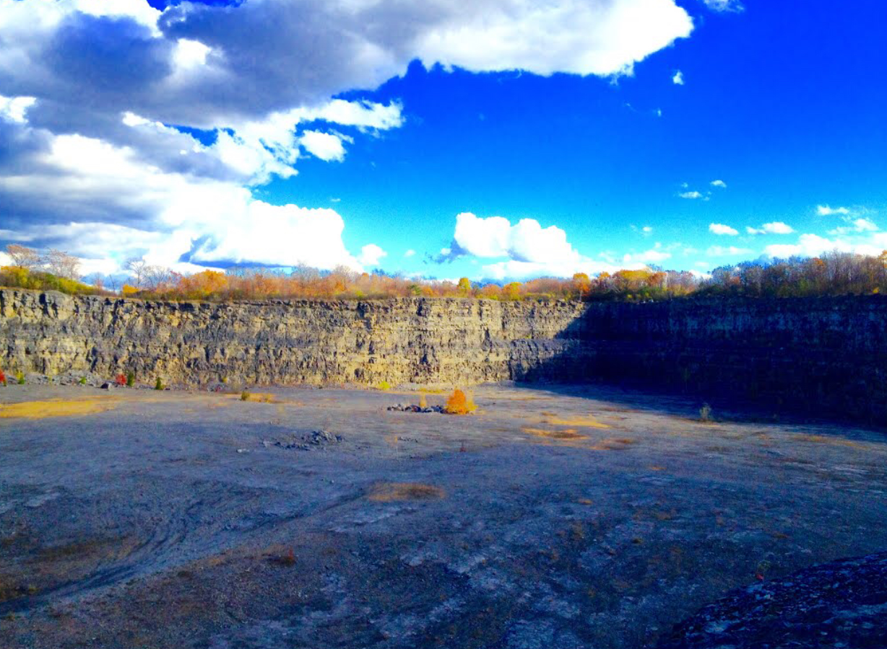
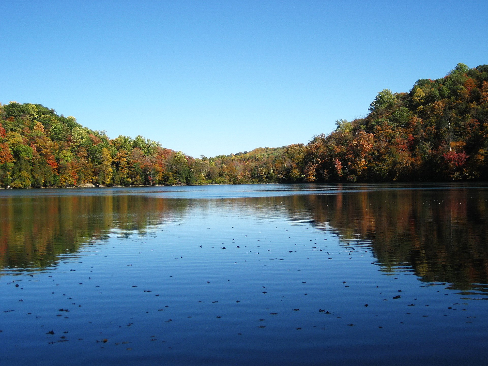

Contrasting Environments

Labrador Hollow Unique Area
Tinker Falls of Labrador Hollow, one of many recreation oportunies of the conservation area.
pc: Wikimedia

Abandoned Dewitt Quarry
Sandwiched between Syracuse Univerisity's Skytop Campus, I-481, and Dumlins golf course is a relic of industry. pc: Google Maps

Green Lakes State Park
The state park is centered around two lakes, and includes many amenities available to the public.
pc: Wikimedia

Sample Headline
Sample text. Click to select the text box. Click again or double click to start editing the text.